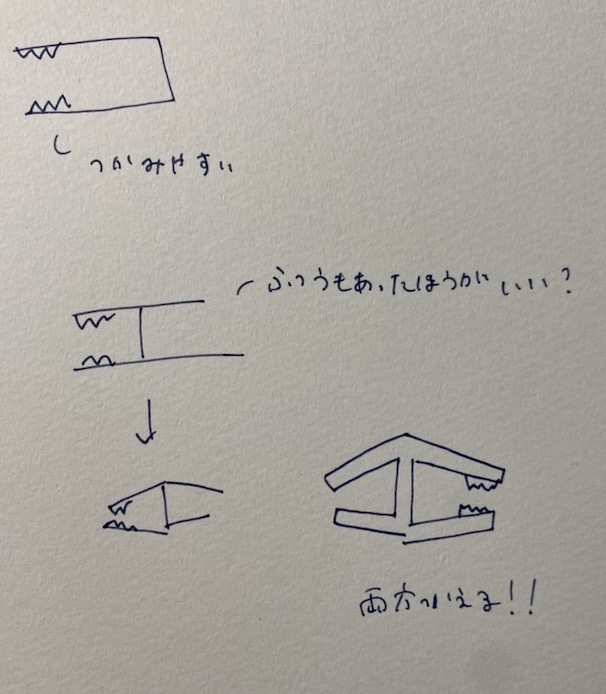
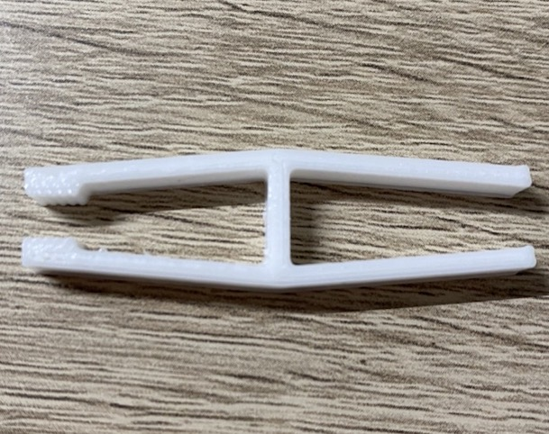

Assignment1 ピンセット
＜作品名＞リバーシブルピンセット
構想段階のスケッチ

作品

設計ファイル
stlファイル
作品の説明
普通のピンセットとして、また滑りやすいものを取るときに
違う作りになっているのでリバーシブルに使うことが可能です。
ギザギザしている方はビーズのような小さくて滑りやすいものを取るときに使えます。
反対の方はギザギザの方と比べて細くなっているため細かいものを掴むときに便利です。
なぜこの作品を作ろうと思ったのか
私がこの作品を作ろうと思った理由はピンセットは細かいものを掴むときに
便利だが滑りやすく使いづらいと考えたからです。
最初はギザギザしたピンセットを作ろうと思ったがそれだけでは
皆と同じような作品になってしまうと考えた。
そこで既存に存在するピンセットは便利なのでピンセットとギザギザの部分、
両方兼ね備えたピンセットを作れば便利なのではないかと考えたからである。
制作プロセスで調べたこと
まとめたこと
使用動画
YouTube